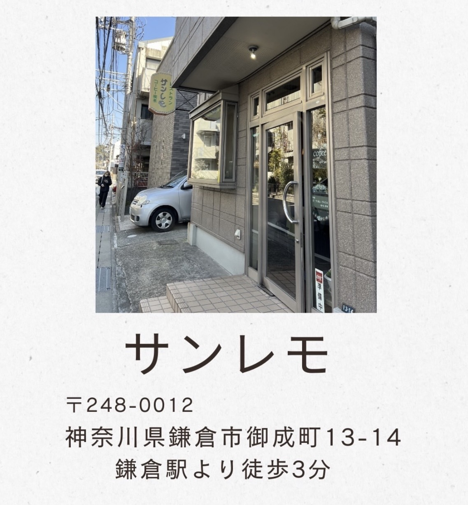

つなぐ鎌倉とは？
鎌倉を拠点として、リアルで出会える、ちゃんと話す、そこから始まる。
【つなぐ鎌倉】は、HamaKura Lab（@hamakura__lab）が運営する、リアルな出会いと地域経済の好循環を創り出すプラットフォームです。
名刺交換だけで終わる関係はいらない。その場で“次の一歩”が形になる関係性を、何よりも大切にしています。
私たちが大切にしている３つのこと
- 深く話せる人数設計
- 主役は皆様、共助が生まれる仕組
- 紹介やコラボが自然に発生する空気感、画面越しでは分からない、直接会うからこそ「肌感覚で知れる学び」がここにはあります。
「つなぐ鎌倉」具体的な活動内容
各種業態、そして市民の皆さまが集結しているからこそ、多角的なプロジェクトが動いています。
つながる・楽しむ
定期交流会 / 心地いい暮らしを彩る「鎌倉マルシェ」 / ワークショップ / 店舗を活用した各種イベント行事
健康・ウェルネス
健康的なライフスタイルを創る、健康分野での事業の創設から各種取り組みまで、「定期食事会」の開催もいたします。
学び・成長する
各種勉強会（専門分野、税理士・行政書士・健康・薬学講座・その他） / キャリアアップ支援 / ビジネス相談 / その他各種業種に合わせた定期勉強会
ビジネスを共創する
企業と個人事業主・市民のマッチング / 業務委託の連携 / 地域の課題解、決誰か一人が引っ張る「中央集権型」ではありません。市民、個人事業主、企業・団体がそれぞれの得意を持ち寄り、みんなで支え合う「地域循環の輪」を形にしていきます。
こんな方へ届けたい
「つなぐ鎌倉」は、立場や業種を超えて、今を大事に、未来の自分に向かって実際に行動している人たちが集まっています。
ライフスタイル・自分の軸を見つけたい方
- １人でモヤモヤしている、一歩踏み出したい
- まだやりたいことが明確じゃないけれど、何か刺激がほしい
- 心地いい暮らしや温かい繋がりを見つけたい
ビジネス・一歩先へ挑戦したい方
- ビジネス相談・繋がり・何かに挑戦してみたい
- 地域問わず、繋がりが欲しい
- お互いの得意を活かせる、コラボ相手（ビジネスパートナー）を探している
参加方法
- @hamakura__lab メンバーはLab内から申し込み
- その他の方はDMにて「参加希望」とご連絡ください。
アクセス
鎌倉駅徒歩３分のカフェが拠点です。
現段階では「つなぐ鎌倉」の開催日に限り、ご訪問・ご対応が可能です。
お手数ですが、ご来場の際は事前に開催日をご確認ください。
少人数制のため、各回ゆとりをもってご案内しています。
気軽に、でもちゃんと深く。鎌倉でお会いしましょう。
